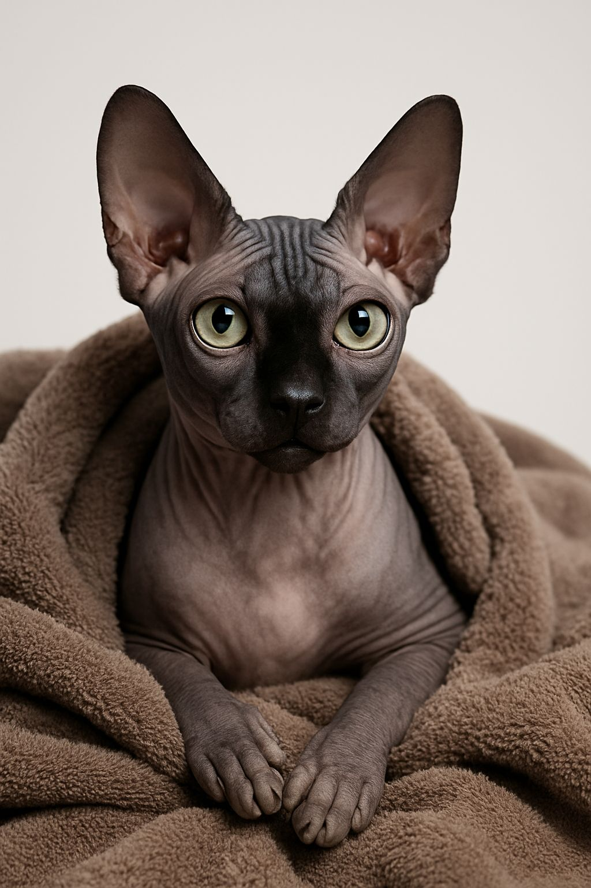
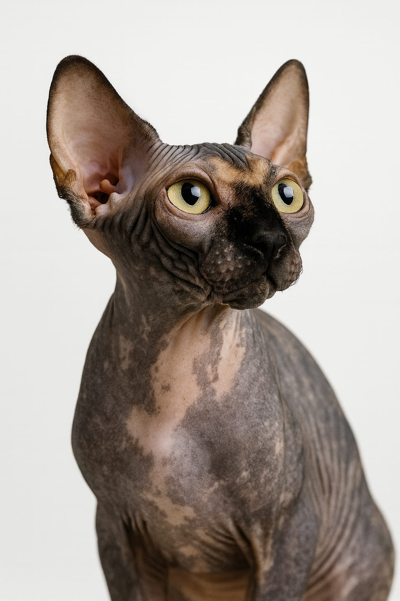
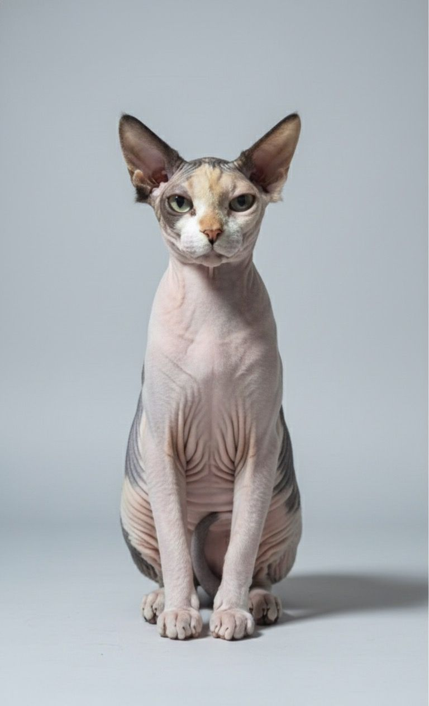
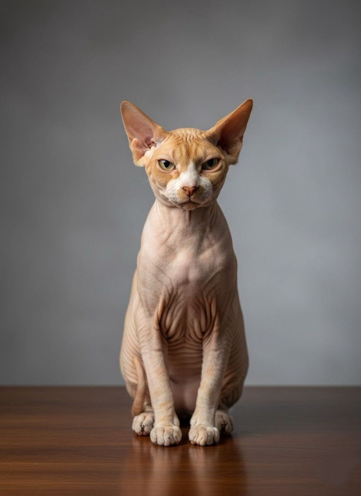
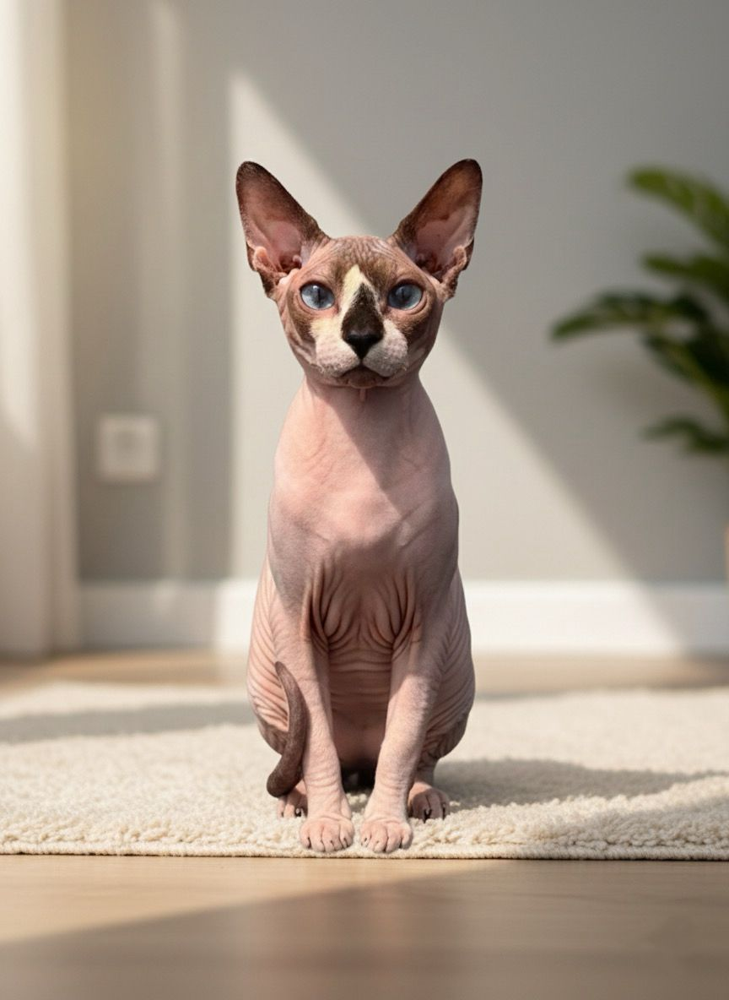

Bem-vindo ao lar dos pelados!
Nossos primeiros Sphynx
Anakin & Halsey

🐾 Curiosidades sobre os Sphynx
Sem pelos, só charme!
Pele macia e quentinha que dá vontade de abraçar o tempo todo.
Nasceram no Canadá
Uma mutação genética nos anos 60 deu origem a esses peladões incríveis.
Atenção é tudo!
Amam seguir você pela casa e receber cafuné.
Banho é preciso!
Sem pelos, a pele precisa de cuidados especiais.
Frio não é com eles
Adoram cobertores, roupinhas e seu colo quentinho.
Corações enormes
Inteligentes, brincalhões e companheiros para toda a vida.
Vídeos
Nossos Serviços
- Venda de filhotes Sphynx
- Consultoria em cuidados com gatos sem pelos(Em breve...)
- Serviços de saúde e bem-estar para gatos Sphynx (Em breve...)
Mamães & Papais
Fêmeas
Pândora | Black Solid
Smoke | Black Tortie
Cela | White Black and Cream
Machos
Apollo | Red White
Léo | Seal Lynx Mink & White
Reserva & Valor
O valor de um filhote de Sphynx pode variar de acordo com cor e sexo, pois algumas combinações são mais raras e, portanto, mais valorizadas.
💡 Fatores que influenciam o valor:
Sexo: filhotes fêmeas geralmente possuem um valor um pouco maior que os machos, devido à sua importância na continuidade da linhagem e características reprodutivas. Coloração: cores mais raras ou desejadas, como preto, cinza ou bege, podem aumentar o preço em relação às cores mais comuns.
💡 Exemplo de variação:
- Filhote macho, cor comum: valor base.
- Filhote fêmea, cor rara: até 20-30% acima do valor base.
Importante: O preço exato de cada filhote é informado somente após avaliação individual. Para saber a disponibilidade, valor atualizado e outras informações, entre em contato conosco na Aba de Contato para mais detalhes.
Valores
O pagamento pode ser realizado em dinheiro, transferência bancária ou cartão de crédito. O valor é definido no primeiro contato, quando explicamos tudo o que está incluso. Assim que a reserva é feita, o valor total é dividido da seguinte forma:
- 30% do valor do gatinho no momento da reserva;
- 70% restantes até dez dias antes da data de entrega do gatinho (agendada previamente).
Política de Cancelamento
Em caso de cancelamento por parte do comprador, a taxa de reserva de 30% não será reembolsada. Se o cancelamento ocorrer por parte do vendedor, o valor total pago será reembolsado integralmente.
Entrega
O gatinho deverá ser retirado no Gatil Bastet Felix, localizado em Guarulhos/SP.
Atualmente, nenhuma companhia aérea envia animais desacompanhados; eles só podem viajar junto ao tutor. Dessa forma, é necessário vir buscar o filhote no aeroporto de Guarulhos. Comprando a passagem com antecedência e escolhendo horários alternativos, o custo costuma ser mais baixo. A taxa cobrada pela LATAM para que o gatinho volte na cabine com o tutor é de R$ 200,00, válida para qualquer horário de voo.
Outra alternativa, para quem reside em São Paulo e região, é vir buscar de carro. Dependendo da distância, podemos levar o filhote até um ponto de encontro no caminho (valor a combinar).
Nossa Política
Obedecemos aos códigos de ética da criação. Portanto, todos os nossos filhotes vendidos para companhia seguem os critérios de bem-estar e de posse responsável adotados por criadores renomados, visando preservar o bom desenvolvimento da raça. Os filhotes são efetivamente reservados após a assinatura do contrato e o pagamento do valor da reserva. Não existe reserva apenas com promessa de compra. Você deverá entrar em contato para fazer a reserva. Em um primeiro momento, você pode achar o valor um pouco caro, mas é preciso ter consciência de que você está adquirindo um gato de um criador sério, com uma criação correta. Nosso gatil é registrado, livre de doenças (todo o plantel foi testado para PKD, FIV e FeLV), usamos somente ração super premium e, principalmente, nossos gatos vivem em um ambiente higienizado e saudável. Além disso, todos os filhotes são entregues vacinados. Não tem como comparar o valor cobrado com o de uma criação fundo de quintal, visto que, na grande maioria dos casos, a ração utilizada é de baixa qualidade; os filhotes são entregues, muitas vezes, sem vacina; não têm pedigree (procedência duvidosa ou misturas com gatos sem raça definida); apresentam doenças e fungos; e, ainda, são entregues precocemente para que o criador reduza gastos. Você pode até achar interessante receber o gato mais cedo, mas para o filhote isso é cruel, pois ele é tirado do convívio materno muito cedo, prejudicando seu desenvolvimento e, principalmente, sua socialização. Criação de gatos de raça é uma coisa; comércio descontrolado de animais é bem outra! Além disso, um gatil correto pode ter no máximo uma cria a cada 8 meses por gata. Ao contrário dos "criadores" de fundo de quintal, que tiram uma cria atrás da outra de cada fêmea, visando somente o lucro, sem se preocupar com a saúde dos gatos. Sabe aquele velho ditado de que “o barato sai caro”? Ele se aplica perfeitamente aos criadores de fundo de quintal. O valor que inicialmente parece mais barato, em pouco tempo acaba se multiplicando com gastos veterinários que o gatinho precisará (remédios orais e tópicos, banhos medicinais, internações) ou até mesmo com a morte precoce, caso tenha alguma doença incurável, como FIV ou FeLV — enfermidades que só podem ser detectadas através de exames nos pais (que geralmente apenas criadores sérios fazem, pois geram custos). Também pode haver infecções adquiridas durante o período em que o filhote ainda não possui resistência suficiente para combater doenças. Desculpe se o texto é um pouco direto, mas muitas pessoas não têm noção dos custos e, principalmente, da grande diferença que existe entre criadores responsáveis e “criadores” improvisados — e por isso acreditam que os gatinhos custam caro. Os meus filhotes são entregues com quatro meses e, durante todo esse tempo, recebem o melhor tratamento possível. Para quem não tem muita ideia de preços, pesquise os valores de vacinas, ração super premium, consultas veterinárias, ultrassonografia, areia higiênica, vitaminas, vermífugos, leite para filhotes (pet milk), água, luz, gasolina, banhos, anuidade do clube, pedigrees dos filhotes, noites em claro, entre outras coisas. Isso sem contar imprevistos no parto — se a gata precisar de cesariana, são mais 500 reais em veterinário, além de medicamentos. E sempre existe o risco de algum filhote nascer morto ou muito fraco e não resistir. Afinal, lidamos com vidas. Portanto, boa parte do valor cobre apenas os custos da criação. E não são somente os filhotinhos — existem também os gatos adultos, que demandam cuidados durante o ano inteiro, todos os dias, mesmo quando não há ninhadas disponíveis para venda. Pense: com todos esses custos, como um filhote com essa qualidade poderia custar tão barato quanto os vendidos por “criadores” de fundo de quintal? Impossível, não é mesmo? Acredito que, com essa explicação, ficou bastante clara a diferença na qualidade da criação, bem como o fato de que criar gatos não é tão simples quanto alguns imaginam. “Nem tudo são flores.”
Você realmente está prepardo para ter um gato?
Antes de trazer um gatinho para a sua vida, é importante ter consciência de que ter um animal de estimação envolve responsabilidades e custos contínuos. Gatos precisam ir ao veterinário regularmente, receber vacinas, vermífugos, alimentação de qualidade, além de cuidados como escovação, higienização das orelhas e olhos, corte de unhas e, em alguns casos, banho e tosa. Eles também precisam de itens básicos como arranhadores, brinquedos e ambientes adequados para gastar energia. E, se ficarem doentes, os tratamentos veterinários podem ser caros. Além disso, gatos são animais cheios de personalidade: soltam pelos, miam, podem correr pela casa, subir em móveis e explorar cada cantinho. Isso faz parte de sua natureza — e quem deseja ter um deve estar preparado para conviver com isso. Gatos podem viver 15 a 20 anos. Você está disposto a cuidar dele durante toda a vida, independentemente de mudanças, casamento, filhos ou qualquer alteração na sua rotina? É fundamental lembrar que os animais sentem. Eles sofrem com abandono, rejeição e falta de cuidados. Um gatinho não é um objeto para ser devolvido quando não convém — é um ser vivo que depende de você para ter uma vida saudável e feliz. Ter um gato, de raça ou não, exige dedicação, responsabilidade e investimentos — principalmente na área da saúde. Muitas vezes, quando um gatinho está doente, ele não consegue demonstrar claramente o que sente, e isso significa que consultas e exames veterinários se tornam indispensáveis. Infelizmente, ainda vemos casos de pessoas que, diante de qualquer dificuldade, optam por abandonar seus animais. Por isso, refletir antes da adoção ou compra é essencial. Avalie sua rotina, sua condição financeira e sua disposição emocional para assumir esse compromisso de longo prazo. Se, após pensar bem, você perceber que está pronto para essa responsabilidade, então prepare-se: um gato pode transformar a sua vida. Eles são companheiros, afetuosos, tranquilos, inteligentes e trazem muita alegria ao lar. Com amor, cuidado e respeito, vocês construirão uma convivência maravilhosa por muitos anos.
Sobre Nós
Bem-vindo ao Bastet Felix, um gatil dedicado à criação responsável e amorosa de gatos da raça Sphynx. Localizado em um ambiente acolhedor e familiar, nosso objetivo é proporcionar aos nossos felinos o melhor cuidado possível, garantindo que cada filhote cresça saudável, feliz e bem socializado.
Nossa História
Desde a infância, os felinos fazem parte da minha vida. Sempre existiu em mim um amor genuíno pelos animais, principalmente pelos gatos, que cresceu ao longo dos anos através de resgates, cuidados, dedicação e muito carinho. Cada vida que passou por minhas mãos reforçou ainda mais a certeza de que cuidar é um dom, uma missão que carrego comigo desde sempre. Por muito tempo, acompanhei pela internet uma raça que despertava algo diferente no meu coração. Mesmo sem nunca ter convivido de perto com ela, eu já sentia uma conexão especial. Lia sobre seu comportamento, suas características, sua personalidade encantadora… e tudo o que diziam só aumentava meu desejo. Até que um dia, ouvi o que o coração já vinha dizendo há muito tempo: é essa a raça que eu quero criar. Quando finalmente pude conviver com ela de perto, tive a certeza de que todas as expectativas eram pequenas diante da realidade. O temperamento doce, a beleza singular e a forma de se relacionar com as pessoas superaram tudo o que eu imaginava. Movida por esse amor e pelo compromisso com o bem-estar animal, decidi seguir também o caminho da Medicina Veterinária, para estar cada vez mais próxima dos cuidados, da saúde e da qualidade de vida dos meus gatos. Meu propósito sempre foi claro: criar com responsabilidade, respeito, amor e conhecimento. Hoje, o meu gatil nasce desse sonho construído ao longo de toda uma vida. Aqui, cada gato é tratado como parte da família. Nosso trabalho é guiado pelo amor, pelo cuidado individual, pela busca da melhor genética, da melhor saúde e, acima de tudo, pelo compromisso de entregar às famílias não apenas um filhote, mas um companheiro de vida criado com ética, carinho e responsabilidade.